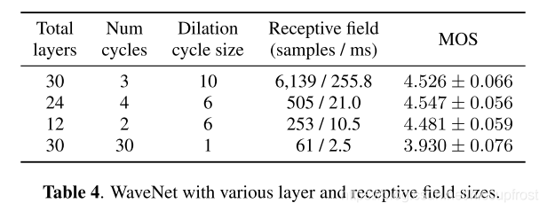

Tacotron2
NATURAL TTS SYNTHESIS BY CONDITIONING WAVENET ON MEL SPECTROGRAM PREDICTIONS论文阅读笔记
先推荐一篇比较好的翻译，但不完整机器之心Tacotron2
简介
历史回顾：
- 前期方法：级联合成 、统计参量
- 特点：低沉不自然
- 方法：Wavenet 时域波形生成模型
- 特点：音质提高但是输入繁杂
Tacotron2
seq2seq 从字符序列到soectrograms，简化了语言声学特征产生的步骤
vocoder : tacotron1–使用短时傅立叶逆变换 < wavenet
对比其余网络： Deep Voice3–主观评估低 Char2Wav–使用传统的中间表示形式
模型简介
系统组件：
注意力机制循环序列到序列特征预测network -- 从字符序列预测mel谱图Wavenet优化版本 -- 基于mel谱图生成时域波形样本
中间特征代表选择
- mel蘋谱图：在较低的频率中强调细节；使用低频率细节，不强调摩擦音和噪声突发所站主导地位的高频细节。
- 选择原因：线性频谱图会丢失相位信息，griffinlim(tacotron1)可以估计该丢弃信息，并且进行短时傅立叶逆变换进行时域转换；mel频谱图会丢弃更多信息，但是与其他声学或者语言特征相比，mel铺图失忆症更简单的低级声学表示，改进的wavenet框架可以从mel频谱中生成高质量的音频
频谱图预测网络
模仿tacotron1,使用50ms帧12.5ms帧跳和Hann窗函数的傅立叶变换；使用5ms帧跳进行试验，以匹配原始wavenet中的条件输入的频率，时间分辨率的提高导致了发音问题增多
使用125HZ to 7.6kHz 80通道的mel滤波器组将STFT幅度转化为mel标度，之后进行对数动态范围压缩（取log）
网络结构
- 编码器 –将字符序列转换为隐藏的特征表示形式
- 解码器 –解析隐藏特征表示形式以预测频谱图
WaveNet Vocoder
预测网络详细介绍
编码器
- 输入字符：学习的512维字符嵌入表示,字符序列经过3层每层512个5*1的过滤器的卷积层，即每个过滤器跨越5个字符，之后批归一化（batch ）和RELU激活函数；卷积层对上下文进行建模，最终输出传递到包含512个单位的单个双向LSTM层（前后两个方向各256个）
- 编码器的输出被注意力网络解析，解码器将完整的编码序列总结为固定长度的上下文向量；使用位置敏感注意力机制，将来自先前解码器一定时间步长的累积注意力权重作为附加特征,这有助于模型顺着输入不停向前进行预测，减少了子序列被解码器重复或者忽略的故障模式
- 输入和位置特征被投影到128维的隐藏表示形式后可计算出注意力概率；而位置特征是通过32个一维长为31的卷积滤波计算的
解码器
解码器由一个自回归RNN，将来自编码器的输入序列每次一帧地预测一幅mel频谱图；来自上一步的预测首先通过一个包含256个隐藏relu单元的2层全连接层的小型预网（pre-net），预网的输出和注意力内容向量被连接并且投入2个具有1024单位的单向LSTM层
单向LSTM层的输出和注意力内容向量被连接之后通过线性变换进行投影，来以此预测目标频谱图帧
最后，预测的mel频谱图通过5层卷积的post-net(后网)，该网络预测了要加到预测中的残差以提高整体性能，后网由512个5×1的过滤器组成，并且进行批归一化，之后在除了最后一层以外的所有层上tanh激活函数
损失函数
最小化经过后网之前和之后的MSE之和来帮助收敛
与预测频谱图并行的是将LSTM输出和注意上下文被投影到一个标量，并通过S型激活来预测输出序列完成的可能性，允许模型动态却仍何时终止生成，具体我恶言，生成将在此概率值>0.5的第一帧处完成
编码器：网络中的卷积层使用概率为0.5的dropout,LSTM层使用概率为0.1的zoneout；解码器：为引入推断时的输出变化，概率为0.5的丢失仅用于自回归解码器的prenet层中
Tacotron1 Tacotron2 使用CBHG和GRU（LSTM变体）模块 使用原始的LSTM和卷积层 结构较为复杂 架结构更加简单 使用griffin lim，减少因子 不使用减少因子，每个解码器步骤对应于单个频谱图
wavenet声码器
- tacotron2的声码器部分使用的是优化后的wavenet，将mel频谱图转换为时域的波形样本，与原始体系一样，具有30个膨胀卷积层，被分为了三个膨胀周期，第k层的膨胀率为$2^k$ ；为适应mel频谱12.5ms的帧跳，调节堆栈中的的上采样层只有两层而不是三层
- 使用logistic分布的10分量混合生成24khz的16位样本，为计算逻辑混合分布，wavenet输出通过relu激活，之后进行线性投影，以预测每个分量组的各个参数（包括平均值、对数刻度、混合物权重）
- 损失选择为对于ground truth样本的负对数似然率
实验与结果
预测网络训练–teacher-forcing模式，解码器输入正确的输出而非预测的输出，可以确保预测帧与目标波形样本的对齐
- 单个gpu上batch size 64
- Adam优化器 $\epsilon = 10^{-6}$
- 学习率0.001 50000次迭代后降至0.00001
- L2正则化 权重$10^{-6}$
声码器训练
- 基于ground truth 批大小128 32GPUS 同步更新
- Adam优化器 $\epsilon = 10^{-8}$
- 固定学习率$10^{-4}$
- 波形目标缩放127.5倍以加速收敛
数据集
一名专业女发言人24.6小时的演讲时间，所有文本均已阐明
结果

- 局限–尽管我们的系统能够可靠地处理整个输入，但韵律模型仍有改进的空间
- 局限–时会遇到发音困难，例如在处理名称时。这一结果表明了端到端方法的挑战-他们需要对涵盖预期用途的数据进行培训
- 优点–神经系统倾向于生成更自然，更像人类的语音
更多角度评价
对比在预测值和ground truth上声码器的表现对比

对比使用线性频谱和mel频谱作为声码器输入

对比简化wavenet

总结
本文介绍了Tacotron 2，这是一种全神经TTS系统，该系统结合了序列到序列的递归网络，并通过改进的WaveNet声码器来关注预测梅尔谱图。 最终的系统将语音合成为Tacotron级韵律和WaveNet级音频质量。 该系统可以直接从数据中进行训练，而无需依赖复杂的特征工程，并且可以实现接近自然人语音的最新音质。